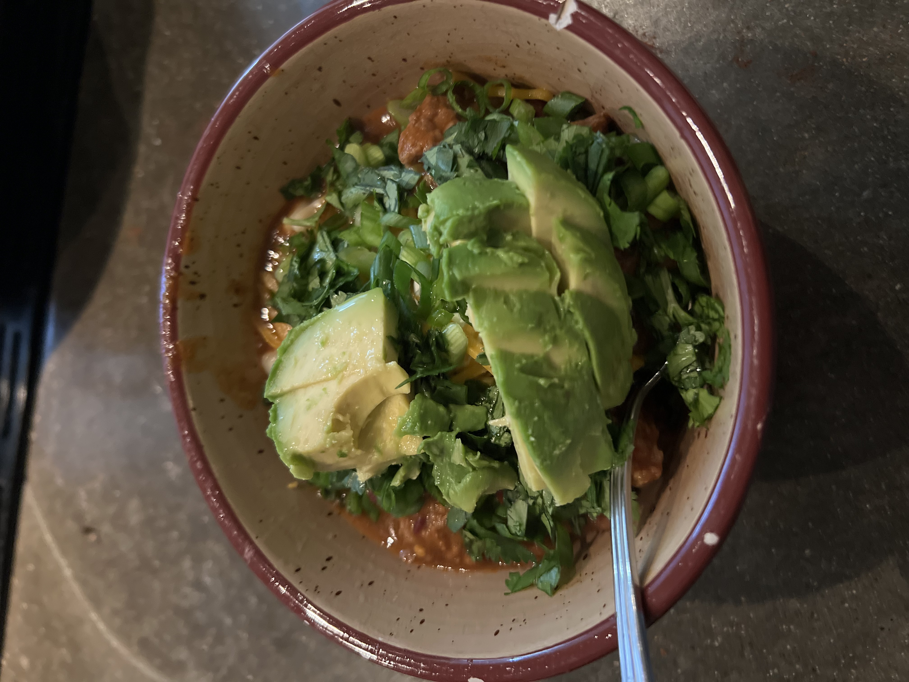

Cathy's Chili

Description
This recipe originally comes from Guy Fieri , but Cathy started making it a few years ago and now it's a staple!
Ingredients
- 3 tbsp. bacon grease or canola oil
- 2 tbsp. butter
- 3 Anaheim chiles, roasted, peeled, chopped
- 3 Poblano chiles, roasted, peeled, chopped
- 2 red bell pepper
- 2 jalapeño chiles minced
- 1 head garlic, minced
- 2 large yellow onions diced
- 1 lb. boneless chuck, trimmed, cut into ¼ inch cubes
- 2 lb. ground beef
- 1 lb. bulk italian sausage
- 1 c. tomato paste
- 2 c. tomato sauce
- 12 oz. lager beer
- 1 c. chicken broth
- 2 tsp. granulated onion
- 2 tsp. granulated garlic
- 3 tbsp. chili powder
- 2 tsp. cayenne pepper
- 2 tsp. ground coriander
- 2 tsp. ground cumin
- 2 tsp. hot paprika
- 2 tsp. kosher salt
- 2 tsp. Black pepper
- 2 15.5 oz. cans pinto beans with juice
- 2 15.5 oz. cans kidney beans with juice
- GARNISH: Macaroni, green onion, red onion, avocado, cheddar cheese, lime, sour cream
Steps
- Add the bacon grease and butter to a large stockpot over high heat. Add the Anaheim chiles, poblano chiles, red bell peppers, jalapeno chiles and onions, and cook until caramelized, about 5 minutes. Add the garlic and saute 1 minute longer. Add the chuck and brown, about 4 minutes. Add the ground beef and sausage and brown, stirring gently, trying not to break up the ground beef too much. Cook until the meat is nicely browned and cooked through, 7 to 10 minutes. Add the chili powder, cayenne, coriander, cumin, granulated garlic, granulated onion, paprika, salt and black pepper, and cook until fragrant, about 1 minute.
- Add the tomato sauce and paste, and stir to caramelize, about 2 minutes. Stir in the beer and stock. Add the kidney and pinto beans; lower the heat and simmer, about 2 hours.
- Serve the chili in bowls and garnish with crackers, green onions and Cheddar.
Home